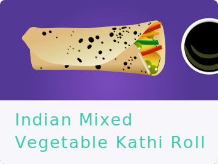
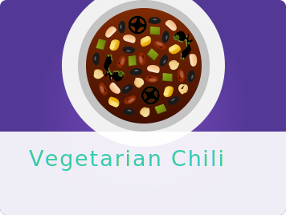
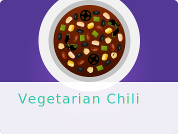

Food as Medicine
"Every 35 days your skin replaces itself and your body makes new cells from the food you eat."
Improve your health with whole foods.
“Nutrition is one of the most powerful things you can change to reverse the effects of chronic disease.”
- Brenda Rea, MD
In one example, plant-based diets have been found to reduce coronary artery disease, while low-carb lifestyles can eliminate type-2 diabetes
in some people.
While diet alone cannot and should not be a replacement for conventional medicine in every situation, a nutrient-dense diet of whole foods is
one important factor for living a long, healthy life.
Such foods-fruits, vegetables, legumes, nuts and whole grains - can bolster our immune system and protect from chronic inflammation.
They provide nutrients like potassium, fiber, folic acid, and vitamins, which are essential for most processes and functions in the body.
When choosing fruits, remember to choose those that are in season in your region. Additionally, choose locally grown foods when possible.
BERRIES | Contain antioxidants that can slow or prevent cell damage and fight cancer. Studies show some compounds in blueberries
can interrupt tumors’ ability to grow new blood vessels.
CRUCIFEROUS VEGETABLES | Examples like kale, cabbage, and broccoli have a wealth of vitamins, fiber and antioxidants. In particular,
they’re a great source of vitamin K, which helps protect your arteries and promote proper blood clotting.
NUTS | Nuts like almonds, pecans, and walnuts contain unsaturated fat, like omega-3 fatty acids, which can prevent arrrhythmias,
lower LDL (bad) cholesterol and raise HDL (good) cholesterol.


LEGUMES | Black beans, kidney beans, lentils, and split peas are among legumes are an excellent source of protein and fiberthat can keep you satiated longer, lower
blood cholesterol levels, and create bowel regularity.
WHOLE GRAINS | Unlike refined grains, whole grains are not stripped of valuable nutrients. Whole grain kernels consist of bran and fiber helps to maintain a steady blood sugar. Choosing
whole grain foods that are high in fiber can also lower cholesterol, improve digestion and prevent the formation of blood clots.
FATTY FISH | Sardines, baked salmon, and other fatty fish can fight inflammation
and protect against heart disease, due to their high levels of omega-3 fatty acids. If you don’t eat seafood, fish oil is an alternative option.
Herbs and Spices
TURMERIC | Bright orange-yellow in color, this spice can reduce symptoms of bloating and gas, and provide relief from arthritic pain,
if consumed on a daily basis. It is used in countless Indian dishes, but can also be added to smoothies, salads, and stir fry dishes.
CAYENNE | Cayenne peppers contain a substance called capsaicin, the ingredient that makes them spicy and can provide pain relief.
Additionally, capsaicin can help reduce ulcers by restricting the growth of an
ulcer-causing bacteria, Helicobacter Pylori, reducing excess stomach acid and increasing blood flow.
THYME | A natural antimicrobial that can stop the growth of microorganisms like fungus, fight infections of the mouth and throat, reduce bloating and
act as a remedy for dry coughs.
GARLIC | In moderate doses, garlic in raw or semi-cooked form can prevent the common cold, slow the progression of cancer, work as an anti-inflammatory
and improve blood pressure.
GINGER | Can be an effective treatment for nausea, cut the severity of motion sickness and decrease markers for colon inflammation, with 2 grams consumed daily.
CINNAMON | Can not only add a sweet flavor to food without adding sugar, but may be particularly effective
at lowering blood sugar levels, and has been shown to lower cholesterol.
SAGE | Can improve brain memory and function, potentially in people with Alzheimers Disease, and soothe upset stomachs and sore throats.
ROSEMARY | can protect against certain cancers, improve working memory performance and memory quality, and increase alertness.
Recipes

 
